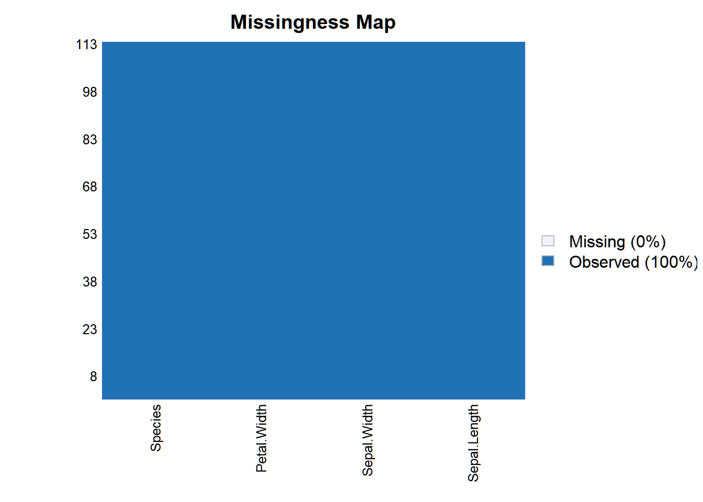
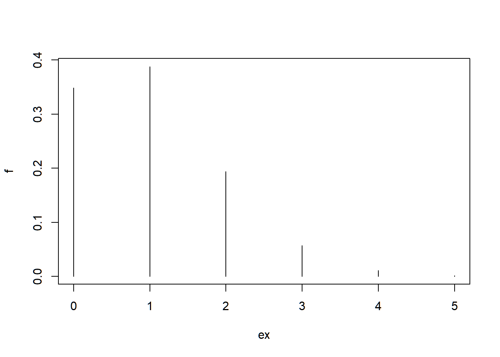

R es un entorno de programación orientado al análisis estadístico, flexible y con multitud de librerías, muy utilizado para el análisis de datos científicos. Es Software Libre y se distribuye bajo licencia GPL.
“El software libre es un tipo de programas de ordenador que una vez obtenidos pueden ser usados, copiados, estudiados, modificados y redistribuidos libremente. Estos permisos son otorgados por sus autores, o quién sea que ostente los derechos de propiedad intelectual sobre el producto, a través de un acuerdo de licencia —una forma de contrato— que acompaña a cualquier programa.
De forma más precisa, el software libre es aquel cuya licencia ofrece a los usuarios las siguientes cuatro libertades:
Para que las libertades 1 y 3 sean posibles es necesario que los usuarios puedan tener acceso al código fuente de los programas. Este código fuente es el conjunto de líneas de texto que indican las instrucciones que debe seguir el ordenador para ejecutar dicho programa. Es decir, en el código fuente de un programa está escrito por completo su funcionamiento. Así que tener acceso a él es la única forma de poder estudiarlo y modificarlo con garantías.
Si hemos estado atentos a todo lo que hemos comentado, rápidamente nos daremos cuenta de que no hemos hecho ninguna referencia al precio de los programas. De hecho, debemos tener presente que aunque mucho software libre es gratuito, esto no tiene por qué ser necesariamente así. La libertad del software está relacionada con los permisos que su autor ofrece y no con su precio.”1
Además, existen planteamientos éticos sobre la idoneidad de utilizar software libre en la universidad pública frente al SW comercial.
Dentro de los lenguajes de programación orientados al análisis de datos destaca también el lenguaje Python. Existe un amplio debate acerca de cuál es el más adecuado para las distintas tareas que implican estos procesos. En términos generales R se emplea más para el análisis estadístico ad hoc y en ámbitos académicos, mientras que Python se desenvuelve mejor dentro del desarrollo, de ello su integración en la empresa privada.
Por último es importante resaltar el carácter polifacético que tiene R. Y es que este se encuentra a medio camino entre un lenguaje de programación y un entorno de comando para el análisis estadístico. Quizás esta flexibilidad sea uno de los aspectos más destacables ya que permite diferentes usos o formas de trabajar con R. Podemos optar por el análisis directo y secuencial en la línea de comandos o con apoyo de un presentando los resultados en látex o automatizar y adaptar procesos mediante control de flujo, funciones y otros elementos más puros programación.
Jornadas España: http://r-es.org/XjuR/
Jornadas Usuarios R en Galicia: https://www.r-users.gal/
Comunidad ROpenSpain: https://ropenspain.es/
Comunidad de habla hispana: http://r-es.org/
Diversidad de género en la comunidad R (listado de comunidades por países):
Blog r-bloggers:
…
La utilización del editor R-Studio presenta ventajas que no encontramos en R; por ejemplo comprobar que ningún paréntesis se queda sin cerrar, copiar y completar columnas, autocompletado, lista de variables, descripción del banco de datos, paquetes instalados, gráficos…
Si no queremos instalar R en nuestro ordenador o/y trabajamos en múltiples computadoras y necesitamos usar R tenemos las siguientes alternativas:
En Rstudio cloud tras registrarnos la versión gratiutia nos deja 25h mensuales y
A continuación se presentan algunas guías de estilo que pueden ser encontradas fácilmente en la red.
Seguiremos unos principios básicos a la hora de escribir código:
Mal:
migraficademediacondionada=plot(sr~ind,type="n",xaxt="n",xlab="",ylab="",main="IC media");points(ICm[,1]~ind,pch=16);segments(ind,ICm[,2],ind,ICm[,3])Mejor:
# Intervalos para la media condicionada
m.cond <- plot(sr ~ ind, type = "n", xaxt = "n",
xlab = "", ylab = "", main = "IC media")
#Puntos
points(ICm[, 1] ~ ind, pch = 16)
#Segmentos
segments(ind, ICm[, 2], ind, ICm[, 3])En Internet:
Comunidad stackoverflow https://stackoverflow.com/
Mailing List https://www.r-project.org/mail.html
En R:
help.search()
help()
?función
help.start() #Ayuda en Htlm Encontrar librerías destacadas en CRAN:
https://cran.r-project.org/web/views/
Librerías Genomic-data:
Cheatsheets:
Monogan, J. E. (2015). Political analysis using R. Springer.
Murrell, P. (2009). R Graphics. Wiley Interdisciplinary Reviews: Computational Statistics, 1(2), 216-220.
Peng, R. (2012). Exploratory data analysis with R
Verzani, J. (2014). Using R for introductory statistics CRC Press.
Williams, G. J. (2017). The Essentials of Data Science: Knowledge Discovery Using R Chapman and Hall/CRC.
Wickham, H. (2016). ggplot2: elegant graphics for data analysis. Springer.
Imai, K. (2017). Quantitative social science: An introduction. Princeton University Press.
Información de la sesión:
sessionInfo()## R version 4.1.2 (2021-11-01)
## Platform: x86_64-w64-mingw32/x64 (64-bit)
## Running under: Windows 10 x64 (build 19043)
##
## Matrix products: default
##
## locale:
## [1] LC_COLLATE=Spanish_Spain.1252 LC_CTYPE=Spanish_Spain.1252 LC_MONETARY=Spanish_Spain.1252 LC_NUMERIC=C
## [5] LC_TIME=Spanish_Spain.1252
##
## attached base packages:
## [1] stats graphics grDevices utils datasets methods base
##
## other attached packages:
## [1] dplyr_1.0.7 Amelia_1.8.0 Rcpp_1.0.7 foreign_0.8-81
##
## loaded via a namespace (and not attached):
## [1] pillar_1.6.4 bslib_0.3.1 compiler_4.1.2 jquerylib_0.1.4 highr_0.9 tools_4.1.2 digest_0.6.29
## [8] jsonlite_1.7.2 evaluate_0.14 lifecycle_1.0.1 tibble_3.1.6 pkgconfig_2.0.3 rlang_0.4.12 DBI_1.1.1
## [15] cli_3.1.0 rstudioapi_0.13 yaml_2.2.1 xfun_0.28 fastmap_1.1.0 stringr_1.4.0 knitr_1.36
## [22] generics_0.1.1 vctrs_0.3.8 sass_0.4.0 tidyselect_1.1.1 glue_1.5.1 R6_2.5.1 fansi_0.5.0
## [29] rmarkdown_2.11 purrr_0.3.4 tidyr_1.1.4 magrittr_2.0.1 backports_1.3.0 ellipsis_0.3.2 htmltools_0.5.2
## [36] assertthat_0.2.1 utf8_1.2.2 stringi_1.7.6 broom_0.7.10 crayon_1.4.2La función básica que utilizamos para instalar paquetes en nuestro equipo es install.packages("nombre_del_paquete"). Otra manera es utilizar los menús desplegables de RStudio.
install.packages("Nombre_del_paquete")Una vez que instalamos un paquete no tendremos que volver a instalarlo. Lo que sí tenemos que hacer es cargarlo en cada sesión para poder utilizar sus funciones. Esto lo hacemos con library("paquete") que suele ponerse al inicio de nuestro script.
En la actualidad existen más de 15000 librerías en el repositorio CRAN.
Operaciones aritméticas
Algunas de las siguientes funciones se pueden aplicar para números, vectores y matrices.
x + y # suma
x - y # resta
x * y # producto
x / y # cociente
x ^ y # potencia
x ** y # potencia
x %% y # x módulo y
x %/% y # división entera (parte entera del cociente)Funciones numéricas
abs(x) # valor absoluto
sqrt(x) # raíz cuadrada
ceiling(x) # |x| entero mayor o igual a x más pequeño
floor(x) # |x| entero menor o igual a x más grande
trunc(x) #parte entera de x
sin(x) #seno
cos(x) #coseno
tan(x) #tangente
log(x) #logaritmo en base e
log(x, base=a) #logaritmo en base a
exp(x) #exponencial
factorial(x) #factorial
max(x,y) #máximo
min(x,y) #mínimoConstantes
pi \(\pi\) (3.141593…)
exp(1) \(e\) (2.718282…)
library(constants) Podemos encontrar más constantes universales.
Operadores lógicos
x < y # menor que
x > y # mayor que
x <= y # menor o igual a
x >= y # mayor o igual a
x == y # igual a
x != y # distinto a
x & y # y
x | y # o
!x # negación de xPregunta if
La estructura general es:
if (condición) { expresión }
#Por ejemplo,
if (x >= 0) { cat("El valor de x es mayor o igual a cero.\n") }Pregunta if-else
La estructura general es:
if (condición) {
expresión1
} else {
expresión2
}
#Por ejemplo,
if (x>=0) {
cat("El valor de x es mayor o igual a cero.\n")
} else {
cat("El valor de x es negativo.\n")
}Ciclo for
Existe una familia de funciones “apply” que funcionan como los ‘for loops’ cuando estos recorren una matriz de datos o listas (ver objetos más adelante). Resultan más comodas para realizar ciertas operaciones que los for loops y además forman parte del lenguaje “natural” de R.
La estructura general es:
for (variable in secuencia) { expresión }
#Por ejemplo,
for (x in 1:3) {
cat("x es", x, "\n")
} Ciclo while
La estructura general es:
while (condición) { expresión }
#Por ejemplo,
x <- 0
while (x<3) {
cat("x es", x, "\n")
x <- x+1 }
cat("x ya es", x, "\n") Matrices
matrix #Definición de matrices en R
t(A) # Matriz traspuesta
A * B # Multiplicación de matrices elemento a elemento
A %*% B # Producto matricial
A %o% B # Producto exterior
crossprod(A,B) #Producto A'B
crossprod(A) #Producto A'A
diag(x) #Si x es un vector, crea una matriz diagonal con los elementos de x en la diagonal
diag(A) # Si A es una matriz, devuelve la diagonal de A
diag(k) # Si k es un escalar, devuelve la matriz Identidad de dimensión k
solve(A, b) # Devuelve el vector x, solución de Ax = b
solve(A) # Inversa de la matriz A
y <- eigen(A) # Cálculo de autovalores y autovectores de A
y$val # Autovalores de A
y$vec # Autovectores de A
U <- chol(A) # Descomposición de Choleski de A. Devuelve una matriz triangular superior U tal que U'U = A
cbind(A,B,...) # Combina matrices o vectores horizontalmente
rbind(A,B,...) # Combina matrices o vectores verticalmente
rowMeans(A) # Vector de medias por filas
rowSums(A) # Vector de suma de filas
colMeans(A) # Vector de medias por columnas
colSums(A) # Vector de suma de columnas
apply(A,1,fun) # Aplica la función fun a cada fila de la matriz A
apply(A,2,fun) # Aplica la función fun a cada columna de la matriz AFilosofía:
https://cran.r-project.org/web/packages/tidyr/vignettes/tidy-data.html
Existen muchas librerías que ayudan a estructurar correctamente los datos. Una de las mas utilizadas es el paquete tydir del universo tidyverse que combinada con el manejo de cadenas (strings) da buenos resultados. (ver Cheatsheet “String manipulation”)
Case sensitivity
R es “sensible” a las mayúsculas y minúsculas; A y a se refieren a diferentes objetos. Además si una sentencia está incompleta al final de una línea R pedirá mas información devolviendo el símbolo +. Tip: Nombra a todos tus objetos en minúsculas y sin acentos.
La estructura fundamental del lenguaje R es el vector.
Entre los principales objetos y más comunes encontraremos:
¿Cómo sabemos de que clase es un objeto?
class()Vector
Es la estructura básica de las variables. Los vectores (y otros objetos) se crean utilizando el operador de asignación <- o = que asigna la operación evaluada del lado derecho del operador al objeto del lado izquierdo.
x <- c(5, 7, 9, 13, -4, 8) # Preferente
x = c(5, 7, 9, 13, -4, 8) # Equivalente
x #llamar objeto## [1] 5 7 9 13 -4 8Tres funciones útiles son:
exist() Nos indica si un objeto existe en el espacio de trabajo.rm() Elimina objetos del espacio de trabajo.ls() Lista los objetos que existen en el entorno.De la misma manera podemos crear distintos objetos e incluso coercionar objetos de un tipo a otro.
Matriz
Las matrices almacenan valores en colecciones (arrays) bi-dimensionales que contienen elementos del mismo tipo, tal cual como una matriz en el contexto del álgebra lineal. Para crear una matriz tenemos que “pasar” un vector atómico (elementos del mismo tipo). Después le indicamos el número de filas y/o columnas con el argumento nrow = un número o ncol = un número respectivamente.
dado <- c(1:6)
m <- matrix(dado, nrow = 2)
m## [,1] [,2] [,3]
## [1,] 1 3 5
## [2,] 2 4 6Fijémonos en como posiciona los números por defecto. Si queremos que los indexe fila por fila, utilizamos el argumento lógico byrow = TRUE.
m <- matrix(dado, nrow = 2, byrow = TRUE)
m## [,1] [,2] [,3]
## [1,] 1 2 3
## [2,] 4 5 6Arrays
Es como la matriz pero n-dimensional y menos versátil. Podemos usar un array para indexar valores en un cubo o hipercubo de 4,5, n-dimensiones. Para utilizarlo le pasamos un vector atómico como primer argumento y después las dimensiones con el argumento dim.
coleccion <- array(c(11:14, 21:24, 31:34), dim = c(2,2,3))
coleccion## , , 1
##
## [,1] [,2]
## [1,] 11 13
## [2,] 12 14
##
## , , 2
##
## [,1] [,2]
## [1,] 21 23
## [2,] 22 24
##
## , , 3
##
## [,1] [,2]
## [1,] 31 33
## [2,] 32 34Factores
Se utilizan para almacenar valores categóricos, color de ojos, sexo, especie… Para crear un factor tenemos que pasar un vector atómico a la función factor(). De manera automática R añade niveles (un atributo. Ver atributos.) convirtiéndolos primero en enteros y asignando las etiquetas que corresponden a cada nivel (entero).
class() Nos devuelve el tipo de objeto.attributes() Nos devuelve los atributos del vector.animales <- factor(c("perro", "gato", "tortuga", "tortuga"))
animales## [1] perro gato tortuga tortuga
## Levels: gato perro tortugaclass(animales)## [1] "factor"attributes(animales)## $levels
## [1] "gato" "perro" "tortuga"
##
## $class
## [1] "factor"Podemos ver como R sitúa exactamente los elementos con unclass()
unclass(animales)## [1] 2 1 3 3
## attr(,"levels")
## [1] "gato" "perro" "tortuga"Es importante no confundir los factores con los caracteres. En general es mejor impedir que R convierta automáticamente las cadenas de caracteres en factores (que lo intentará cuando cargamos y creamos datos) a menos de que vayamos a trabajar con datos categóricos.
Caracteres
Un vector tipo caracter está compuesto por cadenas de texto. Podemos crear un vector caracter con la función character() o bien añadiendo comillas.
"hola"## [1] "hola"personas <- c("María", "Juan", "Adelaida", "Jorge")
personas## [1] "María" "Juan" "Adelaida" "Jorge"typeof(personas) #nos dice como se ha creado un objeto## [1] "character"A los elementos individuales de un vector caracter los llamamos cadenas (strings). Nótese que un caracter puede ser más que letras. ¿Podrías determinar cuál de los siguientes elementos es un caracter y cuál es un número?
1## [1] 1"1"## [1] "1""uno"## [1] "uno"Un error muy típico es olvidar poner comillas a un caracter. Entonces R buscara un objeto en el entorno que probablemente no exista y nos devolverá un mensaje de error.
class(1)## [1] "numeric"class("1")## [1] "character"Observemos una propiedad interesante de la función character() (numeric, logic…). Si vamos a la ayuda, observamos que admite el argumento length que por defecto es 0.
caja <- character(length = 5); caja ## [1] "" "" "" "" ""Nos devuelve 5 espacios en blanco, o dicho de otra manera, un vector de longitud 6 vacío. Esta propiedad que puede parecer una bagatela ¿Para qué habríamos de querer un vector vacío?, pues nos será de mucha ayuda a la hora de crear loops/ciclos y trabajar de manera iterativa.
rep() Replica los valores de \(x\) \(n\) veces.caja <- rep("hola", 4)
caja## [1] "hola" "hola" "hola" "hola"Veámoslo ahora brevemente con el ciclo for (ver estructura ciclo for) y utilizando la función numeric.
numeros <- c(1,3,7,4,10)
numeros ## [1] 1 3 7 4 10caja2 <- numeric(length = length(numeros))
caja2## [1] 0 0 0 0 0for (i in seq_along(numeros)) {
caja2[i] <- i + 0.1
}
caja2## [1] 1.1 2.1 3.1 4.1 5.1Observa que R ordena los elementos de menor a mayor automáticamente. Por el momento no importa si no entiendes muy bien lo que ha pasado antes. Durante el curso iremos practicando estos conceptos que nos serán de mucha utilidad en el futuro.
Numéricos
Es un vector de números. Positivos, negativos, con decimales o no. R guardará los números como double que es un término de computación referido a los bytes que utiliza el ordenador para computar. De cualquier manera, es mejor en nuestro caso pensar en ellos como simplemente números.
numeros <- c(1.3, 0.2, 4, 6, 0, -5); numeros## [1] 1.3 0.2 4.0 6.0 0.0 -5.0typeof(numeros)## [1] "double"class(numeros)## [1] "numeric"El objeto numeros ha sido creado como un double, sin embargo pertenece a la clase numeric. Números al fin y al cabo.
Enteros
Poco utilizados fuera de las ciencias de la computación. Nosotros podemos crear vectores simplemente de la manera que vimos en el anterior punto. No obstante, nos quedamos con la forma de crear explícitamente enteros (por si nos los encontramos por algún lado) que es con la letra L mayúscula.
() Encerramos la sentencia entre paréntesis para llamar al objeto automáticamente. No hay que abusar de esto pues nos podríamos confundir en un mar de paréntesis.(enteros <- c(-1L, 3L, -50L))## [1] -1 3 -50typeof(enteros)## [1] "integer"Lógicos
Los vectores lógicos indexan verdaderos y falsos TRUE, FALSE de la forma booleana. Los operadores lógicos son de mucha ayuda para hacer comparaciones (ver operadores lógicos) y construir índices para extraer elementos que cumplan ciertas condiciones lógicas.
10 < 10.00001## [1] TRUE1 == c(1,1,0,4,0,3) #no confundir "=" con "=="## [1] TRUE TRUE FALSE FALSE FALSE FALSECada vez que tecleamos TRUE o FALSE o F o V R considera este input como un lógico. Por este motivo intentaremos evitar nombrar a nuestros objetos con estas letras.
logico <- c(TRUE, FALSE, TRUE, F); logico## [1] TRUE FALSE TRUE FALSEEn la anterior línea de código hemos utilizado ; para concatenar sentencias en la misma línea.
Ordinales
Los ordinales son factores con un orden que dotanse a hallan categóricas, ampliamente empleados en las C.C.S.S.
a <- factor(c("bueno","regular","malo"),ordered = T)
a## [1] bueno regular malo
## Levels: bueno < malo < regularVemos como en la declaración de los niveles aparaece el orden de menor a mayor de los niveles
Listas
Puede considerarse una lista como un vector atómico dado que agrupa elementos en conjuntos unidimensionales. Sin embargo, las listas no agrupan valores individuales sino objetos (que evidentemente pueden ser de diferente tipo) e incluso otras listas.
milista <- list(c(animales, 1:3, m, "Perro", list(TRUE, FALSE)))
milista## [[1]]
## [1] "2" "1" "3" "3" "1" "2" "3" "1" "4" "2" "5" "3" "6" "Perro" "TRUE" "FALSE"Como ya se puede apreciar, el contenido de una lista puede convertirse en una estructura complicada, pero al mismo tiempo flexible. Esta nos permite agrupar mucha información; básicamente podemos guardar ahí lo que queramos.
Data frames
Un data.frame es la versión bidimensional de la matriz. Es la estructura más utilizada en la vida diaria para el análisis de datos. Podemos pensar en esta estructura como en las hojas de cálculo de Excel (aunque más útil) ya que se parece mucho en la forma en que están situados los datos. Los data frames agrupan vectores atómicos en tablas bidimensionales, de tal manera que cada vector es una columna de la tabla.
head() Vemos las 6 primeras filas por defecto.datos <- iris
head(datos) # cabecera## Sepal.Length Sepal.Width Petal.Length Petal.Width Species
## 1 5.1 3.5 1.4 0.2 setosa
## 2 4.9 3.0 1.4 0.2 setosa
## 3 4.7 3.2 1.3 0.2 setosa
## 4 4.6 3.1 1.5 0.2 setosa
## 5 5.0 3.6 1.4 0.2 setosa
## 6 5.4 3.9 1.7 0.4 setosaclass(datos)## [1] "data.frame"Funciones
Las funciones también son un tipo de objeto.
class(names)## [1] "function"Trabajan con un input y devuelven un output. No modifican el input.
Coerción
Supongamos que queremos convertir un vector tipo caracter en factores. Retomemos nuestro objeto personas creado previamente.
is.character() test/ pregunta: ¿Es character? con respuesta lógica.is.factor()is.character(personas)## [1] TRUEfactor(personas)## [1] María Juan Adelaida Jorge
## Levels: Adelaida Jorge Juan Maríais.character(personas)## [1] TRUE¿Porqué cuando preguntamos por sugunda vez si nuestro objeto personas es characater, nos sigue devolviendo la misma respuesta?
Recordemos que una de las características de R es que es dinámico. Es decir, podemos ir probando sentencias, operaciones sin guardarlas necesariamente. De ésta manera no saturamos con objetos innecesarios nuestro espacio de trabajo y preservamos nuestra estabilidad mental.
levels() Accedemos al atributo “niveles” de la variable.pers.fact <- as.factor(personas)
is.character(pers.fact)## [1] FALSElevels(pers.fact)## [1] "Adelaida" "Jorge" "Juan" "María"is.factor(pers.fact)## [1] TRUELa forma básica de seleccionar/extraer elementos dentro de un vector son los corchetes [elemento]. Existen tres maneras básicas:
Posición
Retomemos el objeto personas que creamos antes y está compuesto por cuatro elementos. Para acceder a la posición 3 (al tercer elemento) hacemos lo siguiente:
personas[3]## [1] "Adelaida"“Adelaida” es el elemento que ocupa la tercera posición de nuestro vector. Podemos acceder a todos menos a uno:
personas[-3]## [1] "María" "Juan" "Jorge"Vemos que R nos devuelve todos los elementos menos el tercero “Adelaida”.
: para decir “desde : hasta”Ahora accedemos a los elementos que van desde el primero al tercero:
personas[1:3]## [1] "María" "Juan" "Adelaida"Siguiendo la misma lógica podríamos negar esta secuencia pero ¡ojo!, no podemos hacer lo siguiente:
personas[-1:3]## Error in personas[-1:3]: only 0's may be mixed with negative subscripts¿Podrías decir porqué?
La cuestión es que R interpreta que quieres acceder a los elementos que están en la posicisión desde -1 hasta la 3 ¿Cuál es la posición -1?. Pues bien, para negar esta secuencia utilizaremos los paréntesis ():
personas[-(1:3)]## [1] "Jorge"Que nos devuelve el cuarto elemento. Podemos “pasarle” a los corchetes otro vector que nos sirva de índice o incluso otras funciones.
Recuerda que los argumentos van separados por comas. Es común equivocarse al principio y no detectar dónde está el error.
#Pasándole otro vector
personas[c(1, 4)]## [1] "María" "Jorge"Que nos devuelve las posiciones 1 y 4.
grepl() Match de argumentos utilizando patrones. (Ver Cheatsheet “String manipulation”)Le pasamos una función de reconocimiento de patrones:
personas[grepl(pattern = "María", x = personas)]## [1] "María"Que nos devuelve a el/los elementos que coinciden con el patrón “María”.
Por valor
Retomamos el objeto numeros de longitud 6 que creamos antes . Utilizamos los operadores lógicos para acceder a los elementos.
numeros[numeros == 4] #No confundir "==" con "=". ## [1] 4De la misma manera podemos utilizar cualquier otro tipo de operador lógico e incluso definir el índice fuera de la función. Retomamos nuestro objeto m que era una matriz 2 x 3.
ii <- m > 4
m[ii]## [1] 5 6Hemos creado un índice al que hemos nombrado como ii que responde a una sentencia lógica. El mismo lo hemos pasado a los corchetes después del objeto (que es una matriz) para indicarle a R que estamos seleccionando/ extrayendo los elementos que cumplan con la condición lógica definida en ii.
%in% Lo utilizamos “esto en este conjunto”Retomamos el objeto personas.
ii <- c("Pedro", "Ramiro", "Adelaida")
ii %in% personas## [1] FALSE FALSE TRUEObserva que estamos haciendo una comprobación lógica por posición y R nos devuelve un lógico sobre cada elemento por el cual pregruntamos.
Ahora utilicemos esta idea para extraer elementos por valor.
indice <- c(1,-5)
indice %in% numeros## [1] FALSE TRUEComo puedes observar con estos secillos ejemplos, las posibilidad y la flexibilidad para el manejo de grandes bases de datos es inmensa.
Por nombre
Le pasamos a los corchetes un nombre y, dado que un nombre es un caracter, recuerda ponerlo entre comillas.
personas["Juan"]## [1] NA¿Podrías decir porqué devuelve un error?
names(personas) <- c("María", "Juan", "Adelaida", "Jorge" )
personas["Juan"]## Juan
## "Juan"Hemos dicho anteriormente que una característica de un objeto tipo matriz es su bidimensionalidad y la restricción de contener elementos del mismo tipo. Fíjate en la lógica de extracción de elementos de un vector expuesta en los puntos anteriores. Utilizamos los corchetes [] y a ellos les “pasamos” una sentencia, índice, objeto… Le pasamos una por su unidimensionalidad. Ahora bien, dado que una matriz (y un data frame que veremos después) es bidimensional, a la hora de extraer / seleccionar elementos identificaremos dos posiciones dentro de los corchetes separadas por una coma. La primera posición se refiere a las filas y la segunda a las columnas. Veámoslo con un ejemplo y recuperemos nuestro objeto m definido anteriormente.
Supongamos que queremos extraer o referirnos a la primera fila:
m[1,]## [1] 1 2 3Observa que efectivamente R nos devuelve la primera fila de la matriz. Ahora extraigamos la segunda columna:
m[,2]## [1] 2 5Observa que la primera posición, que se refiere a las filas, la hemos dejado en blanco. Ahora extraigamos el elemento que se encuentra en la segunda fila y la tercera columna:
m[2,3]## [1] 6La misma lógica que seguimos para extraer elementos de un vector es valida para los objetos bidimensionales.
$ Operador con el que extraemos variables de un data.frameEl objeto tipo data.frame es uno de los más utilizados. Tanto es así, que incluso cuenta con un operador propio que nos permitirá seleccionar variables. Recuperamos nuestro objeto datos.
tail() Nos devuelve las 6 últimas filas por defecto.tail(datos$Sepal.Length, n = 4)## [1] 6.3 6.5 6.2 5.9Observa la anterior sentencia. Hemos “aninado” operaciones de dentro hacía afuera. Primero seleccionamos la variable Sepal.Length y después a esa operación le hemos aplicado la función tail() pasándole a tail() el argumento n = 4, es decir, que nos devuelva las últimas cuatro filas del data frame datos. Podríamos seguir incluso anidando más sentencias:
sd() Nos da la cuasi-desviación típica.sd(tail(datos$Sepal.Length, n = 4))## [1] 0.25¿Podrías decir que hemos hecho en la anterior operación?
Efectivamente. Hemos calculado la cuasi-desviación típica de los cuatro últimos valores de la variable Sepal.Length de nuestro data frame datos.
Tip: Observa que cuando tecleas el perador $ después de tu data frame en RStudio te aparece un menú desplegable con todas tus variables. Este autocompletado te ahorra mucho tiempo escribiendo e incluso a veces sirve de exploración rápida. Utilízalo.
De la misma manera que extraímos filas, columnas y valores concretos con los corchetes en las matrices, podemos utilizarlos en los dataframes. Supongamos que queremos extraer la cuarta fila del objeto datos:
datos[4,]## Sepal.Length Sepal.Width Petal.Length Petal.Width Species
## 4 4.6 3.1 1.5 0.2 setosaO bien la séptima fila de la variable Species:
datos[7,"Species"]## [1] setosa
## Levels: setosa versicolor virginicaAdemás del valor “setosa”, R nos devuelve los niveles del factor que hemos seleccionado. Supongamos que queremos hacer una comprobación lógica y nos preguntamos si el valor de la séptima fila de la variable Species es “versicolor”.
datos[7,"Species"] == "versicolor"## [1] FALSEUn atributo es información que podemos “pegar” a un vector atómico o a cualquier objeto. Éstos no afectan a los valores y tampoco los veremos cuando mandamos llamar a un objeto. Podemos pensar en ellos como en una especie de metadatos. Generalmente R ignorará esta información, sin embargo, muchas funciones bucean en los atributos para poder operar de manera conveniente. Si un objeto no tiene atributos veremos la salida NULL.
attributes(1)## NULLAtributos comunes son:
names() Nombres.dim() Dimensión (útil para matrices y data.frames).Probemos con nuestro objeto datos creado anteriormente.
names(datos); dim(datos)## [1] "Sepal.Length" "Sepal.Width" "Petal.Length" "Petal.Width" "Species"## [1] 150 5 Tip: Guarda tus funciones en scripts aparte, coméntalas correctamente y reutilízalas cuando las necesites cargándolas a la sesión con load("mifuncion.R")
La estructura general es:
mifuncion <- function(arumento1, argumento2, ...) {
expresiones
return(objeto)
}Es importante por motivos de estilo y para leer el código con mayor facilidad mantener esta estructura. Toda función en R cuenta con tres partes elementales:
Observemos que cada línea del código entre corchetes (el cuerpo) suele ser una sentencia u operación. Aunque R ignora los espacios, separarlo en líneas hace más fácil la lectura y R ejecuta la expresión entera entre corchetes.
Cuerpo
Veamos un ejemplo.
sample() Toma una muestra de n elementos de x con o sin remplazamiento.#función anónima
tirar.dado <- function() {
dado <- 1:6
dado.s <- sample(dado, 2)
sum(dado.s)
} Vemos que nos devuelve como resultado la última operación del cuerpo de la función. Si mandamos llamar nuestra función sin los paréntesis nos devuelve el cuerpo de la función:
tirar.dado## function() {
## dado <- 1:6
## dado.s <- sample(dado, 2)
## sum(dado.s)
## }body(tirar.dado) #equivalente## {
## dado <- 1:6
## dado.s <- sample(dado, 2)
## sum(dado.s)
## }Argumentos
Tip: Podemos consultar los argumentos de una función propia o de una librería con ?lafuncion() No intentes aprenderte todos los argumentos de una función.
La anterior función es “anónima”; opera sin necesidad de pasarle ningún argumento. Lo interesante es que podemos pasarle cualquier vector, operación, objeto, ¡otra función!… a nuestra función y pedirle que opere con él.
length() Nos devuelve la longitud del vector.sum() Suma los elementos del vector numérico.return() Nos devuelve el valor de la expresión evaluada.mimedia <- function(x) {
media <- sum(x) / length(x)
return(media)
}
mimedia()## Error in mimedia(): argument "x" is missing, with no defaultNos devuelve un error porque la función mimedia necesita al objeto x, que no hemos definido, para realizar su función. Al objeto x podemos definirlo (i) dentro del cuerpo de la función, (ii) asignándole valores por defecto al argumento o, (iii) fuera de la función.
(i)
mimedia <- function(x) {
x <- 1:6
media <- sum(x) / length(x)
return(media)
}
mimedia()## [1] 3.5(ii)
mimedia <- function(x = 1:6) {
media <- sum(x) / length(x)
return(media)
}
mimedia()## [1] 3.5(iii)
a <- 1:6
mimedia <- function(x) {
media <- sum(x) / length(x)
return(media)
}
mimedia(x = a) ## [1] 3.5 Tip: Para el cuerpo de las funciones creadas por nosotros es mejor acceder a los elementos de la manera básica que con el universo tidyverse u otras librerías.
Directorio de trabajo
Cada vez que abrimos R la sesión se vincula a un directorio por defecto (working directory). Es ahí donde R busca los datos cuando intentamos cargarlos y es ahí donde los guarda. Para saber que directorio se está utilizando:
getwd()## [1] "C:/Users/javro/Documents/probando2/docs"Si queremos cambiarlo tendremos que especificar la ruta completa con la función setwd(). Ésta podemos copiarla y pegarla de las ventanas de navegación e, importante, tenemos que sustituir el backslash \ por / y entrecomillar el texto.
setwd("una_carpeta/miproyecto")Lo más recomendable, a efectos de compartir código es abrir un nuevo “proyecto” en el entorno de RStudio. De esta manera no tendremos que cambiar en cada sesión nuestro directorio de trabajo y, sobre todo, no tendremos que enviar código basura a nuestros colaboradores.
Textos planos
Es una de las maneras más comunes de almacenar datos (el .csv, .txt … son textos planos) porque son muy simples y pueden ser leídos por muchos programas incluso por editores de texto básicos como un bloc de notas. Si te das cuenta, los datos públicos abiertos suelen venir en este formato. La función más común para leer texto plano es read.table que admite los siguientes argumentos entre otros (recuerda que puedes ver los argumentos que acepta cualquier función consultando la ayuda de r ?unafuncion()):
Cargamos el archivo calidadaire.txt al entorno de trabajo
datos <- read.table("DATA/calidadaire.txt", header = T)A su vez podemos guardar el objeto, supongamos que en formato .csv utilizando la función write.csv. Observa que es muy intuitivo y sigue la misma lógica para otras extensiones.
Otros tipos de archivos
Si bien es lo más común trabajar con texto plano, hemos de saber que en R podemos leer prácticamente cualquier tipo de archivos, desde html’s, acceder a API’s, sql, mysql, wikipedia, .px, .tiff, .sav, .dbf, .xlxs … Aunque para ello tendremos que instalar paquetes desde el repositorio CRAN o desde cualquier otro. (Ver cargar paquetes) Una de las librerías más utilizadas (utilizamos indistintamente librerías y paquetes en este contexto) para cargar datos procedentes de SW específico es foreign que instalaremos en nuestro equipo y cargaremos como hemos aprendido antes.
library(foreign)ls() Nos devuelve los objetos de un entorno específico.Tip: Con la siguiente sentencia podemos ver el listado de todas las funciones de una librería: ls(“package:foreign”)
ls("package:foreign")## [1] "data.restore" "lookup.xport" "read.arff" "read.dbf" "read.dta" "read.epiinfo" "read.mtp" "read.octave"
## [9] "read.S" "read.spss" "read.ssd" "read.systat" "read.xport" "write.arff" "write.dbf" "write.dta"
## [17] "write.foreign"Supongamos que queremos leer un archivo .sav
datos <- read.spss("DATA/control.sav", to.data.frame = T) #es recomendable convertir los archivos .sav a objetos tipo data.frame utilizando el argumento to.data.frame = TPara una consulta rápida podemos consultar la “chuleta” (Cheatsheet) “data_import”.
Una vez hemos abierto un proyecto nuevo o abierto uno ya existente, hemos cargado nuestros datos en la sesión y hemos llamado a nuestras librerías si es el caso, solemos realizar una serie de operaciones para darnos una idea de los datos con los que estamos trabajando.
Asignemos al objeto datos el data set iris
datos <- irisView(datos) Invocamos una hoja donde podemos explorar los datos. No es recomendable si tenemos una base muy pesada.View(datos)Vemos los nombres de las variables:
names(datos)## [1] "Sepal.Length" "Sepal.Width" "Petal.Length" "Petal.Width" "Species"names() Nos devuelve un vector caracter con el atributo “nombre” de cada variable en datos.
Vemos la cabecera y la cola de los datos:
head(datos)## Sepal.Length Sepal.Width Petal.Length Petal.Width Species
## 1 5.1 3.5 1.4 0.2 setosa
## 2 4.9 3.0 1.4 0.2 setosa
## 3 4.7 3.2 1.3 0.2 setosa
## 4 4.6 3.1 1.5 0.2 setosa
## 5 5.0 3.6 1.4 0.2 setosa
## 6 5.4 3.9 1.7 0.4 setosatail(datos)## Sepal.Length Sepal.Width Petal.Length Petal.Width Species
## 145 6.7 3.3 5.7 2.5 virginica
## 146 6.7 3.0 5.2 2.3 virginica
## 147 6.3 2.5 5.0 1.9 virginica
## 148 6.5 3.0 5.2 2.0 virginica
## 149 6.2 3.4 5.4 2.3 virginica
## 150 5.9 3.0 5.1 1.8 virginicastr() Nos informa sobre la estructura interna de nuestro data frame.str(datos)## 'data.frame': 150 obs. of 5 variables:
## $ Sepal.Length: num 5.1 4.9 4.7 4.6 5 5.4 4.6 5 4.4 4.9 ...
## $ Sepal.Width : num 3.5 3 3.2 3.1 3.6 3.9 3.4 3.4 2.9 3.1 ...
## $ Petal.Length: num 1.4 1.4 1.3 1.5 1.4 1.7 1.4 1.5 1.4 1.5 ...
## $ Petal.Width : num 0.2 0.2 0.2 0.2 0.2 0.4 0.3 0.2 0.2 0.1 ...
## $ Species : Factor w/ 3 levels "setosa","versicolor",..: 1 1 1 1 1 1 1 1 1 1 ...Vemos que nos da la información del objeto datos. Nos dice que es un “data.frame” de dimensiones 150 x 5 (las dimension podemos obtenerla con dim()) y de cada variable nos indica que tipo de objeto es. Si nuestra variable es factor nos indica el número de niveles y además nos muestra los primeros valores de cada variable.
missmap() Vistazo gráfico de nuestros valores perdidos. Es necesario cargar la librería library(Amelia). No recomendable para bases muy grandes.library(Amelia)
missmap(datos)summary() Es una función genérica. Ver detalles con ?summary()En nuestro ejemplo summary() nos devuelve los estadísticos principales:
summary(datos)## Sepal.Length Sepal.Width Petal.Length Petal.Width Species
## Min. :4.300 Min. :2.000 Min. :1.000 Min. :0.100 setosa :50
## 1st Qu.:5.100 1st Qu.:2.800 1st Qu.:1.600 1st Qu.:0.300 versicolor:50
## Median :5.800 Median :3.000 Median :4.350 Median :1.300 virginica :50
## Mean :5.843 Mean :3.057 Mean :3.758 Mean :1.199
## 3rd Qu.:6.400 3rd Qu.:3.300 3rd Qu.:5.100 3rd Qu.:1.800
## Max. :7.900 Max. :4.400 Max. :6.900 Max. :2.500R nos devuelve de cada variable continua el mínimo, el máximo, el primer y tercer cuartil además de la media y la mediana. De la variable factor hace un conteo de las observaciones por nivel. En nuestro ejemplo no tenemos valores perdidos, si los hubiere, también vendrían especificados para cada variable.
var() Nos da la cuasivarianza de un vector numérico.La función summary() no nos da la cuasivarianza por defecto. Para calcularla utilizamos:
var(datos$Sepal.Length)## [1] 0.6856935round(var(datos$Sepal.Length), 3)## [1] 0.686Si queremos saber la cuasivarianza de todas las variables numéricas de nuestro data frame ¿Iremos calculando una por una? Lo mejor es pasarle un ciclo. Hemos especificado anteriormente el “ciclo for”, sin embargo, hemos de saber que en R los loops “naturales” son los pertenecientes a la familia apply que iremos introduciendo durante el curso.
lapply(x = vector, función) Aplica a cada elemento una función y nos devuelve un objeto tipo list().A cada una de las variables numéricas les pasamos la función var(). Observa que no es necesario en este caso poner los paréntesis despues de var.
lapply(datos[,1:4], var)## $Sepal.Length
## [1] 0.6856935
##
## $Sepal.Width
## [1] 0.1899794
##
## $Petal.Length
## [1] 3.116278
##
## $Petal.Width
## [1] 0.5810063Si no nos gusta esta presentación podemos convertir la lista que nos ha devuelto R en un data.frame coercionando el objeto y además redondeando a 3 decimales. (Ver coercionar).
round(as.data.frame(lapply(datos[,1:4], var)), 3)## Sepal.Length Sepal.Width Petal.Length Petal.Width
## 1 0.686 0.19 3.116 0.581En este epígrafe veremos dos enfoques muy comunes en el tratamiento de datos en R. El primero es el enfoque tidyverse y el segundo con R base. Empezaremos mostrando el primero.
Cargaremos la librería dplyr.
library(dplyr)Podemos ver que el número de funciones que contiene esta librería es muy grande, y es que es una de las más utilizandas para el manejo de datos.l
length(ls("package:dplyr"))## [1] 290Por el momento vamos a quedarnos con cinco funciones básicas que nos darán mucho juego en el manejo de datos diario:
select() Selección de variables.filter() Selecciona casos (filas) en las que se cumplen condiciones.mutate() Crea nuevas variables.group_by() Agrupa valores.arrange() Ordena valores.summarise() Realiza resumenes. Trabaja con datos agrupados por group_by().%>% Pipe. Concatena sentencias.Desde la version de R 4.1 el operador pipe se encuentra disponible en base y no hace falta cargar maggrittr o tidyverse
|> Nuevo Pipeselect()
Retomemos nuestro objeto datos creado anteriormente. Vamos a utilizar select() para seleccionar (como su nombre indica) columnas. Observa que vamos a ir encadenando sentencias con el perador %>%, contrario a ir “anidando” ordenes como es en R base.
Supongamos que queremos seleccionar la variable “Sepal.Width” y ver sus primeras 6 filas:
datos %>% select(Sepal.Width) %>%
head()## Sepal.Width
## 1 3.5
## 2 3.0
## 3 3.2
## 4 3.1
## 5 3.6
## 6 3.9Ahora seleccionamos todas menos “Sepal.Width” y vemos la cabecera:
datos %>% select(-Sepal.Width) %>%
head()## Sepal.Length Petal.Length Petal.Width Species
## 1 5.1 1.4 0.2 setosa
## 2 4.9 1.4 0.2 setosa
## 3 4.7 1.3 0.2 setosa
## 4 4.6 1.5 0.2 setosa
## 5 5.0 1.4 0.2 setosa
## 6 5.4 1.7 0.4 setosaObserva de que a pesar de que estamos llamando a la variable por su nombre en la sintáxis de dplyr() no estamos obligados a ponerlo entre comillas.
Tip: Cuando encadenes sentencias con %>% reserva una línea para cada orden. De esta manera será fácil seguir tu razonamiento.
De la misma manera que extraíamos / seleccionabamos en Rbas (por posición, valor y nombre) podemos hacerlo en dplyr. La cabecera de las tres primeras columnas y de la quinta:
datos %>% select(c(1:3, 5)) %>% head()## Sepal.Length Sepal.Width Petal.Length Species
## 1 5.1 3.5 1.4 setosa
## 2 4.9 3.0 1.4 setosa
## 3 4.7 3.2 1.3 setosa
## 4 4.6 3.1 1.5 setosa
## 5 5.0 3.6 1.4 setosa
## 6 5.4 3.9 1.7 setosafilter()
Utilizamos filter() para seleccionar casos. Vayamos concatenando sentencias. Supongamos que queremos extraer las observaciones de “Sepal.Width” pero sólo de aquellas flores que son “versicolor”:
datos %>% select(Sepal.Width, Species) %>%
filter(Species == "versicolor") %>% head() #utilizamos head() al final por cuestiones de espacio en el documento. ## Sepal.Width Species
## 1 3.2 versicolor
## 2 3.2 versicolor
## 3 3.1 versicolor
## 4 2.3 versicolor
## 5 2.8 versicolor
## 6 2.8 versicolorDado que podemos seleccionar casos que cumplan con ciertos criterios, entonces también podemos utilizar operadores lógicos. De la operación anterior, además de seleccionar la especie “versicolor” queremos también la “setosa” y con una anchura de sépalo mayor que 3.7mm, entonces:
datos %>% select(Sepal.Width, Species) %>%
filter(Species == "versicolor" | Species == "setosa",
Sepal.Width > 3.7) ## Sepal.Width Species
## 1 3.9 setosa
## 2 4.0 setosa
## 3 4.4 setosa
## 4 3.9 setosa
## 5 3.8 setosa
## 6 3.8 setosa
## 7 4.1 setosa
## 8 4.2 setosa
## 9 3.8 setosa
## 10 3.8 setosamutate()
Utilizamos mutate para crear nuevas variables que pueden ser el producto de una operación o simplemente cualquier valor.
datos %>% select(Sepal.Width) %>%
mutate(unos = 1) %>%
head()## Sepal.Width unos
## 1 3.5 1
## 2 3.0 1
## 3 3.2 1
## 4 3.1 1
## 5 3.6 1
## 6 3.9 1Simplemente hemos puesto un uno en cada fila y hemos nombrado a esa nueva variable como “uno”. Pero podríamos realizar operaciones un poco más complejas. Supongamos que estamos interesador en crear una nueva variable que nos diga para cada observación de Sepal.Width si está por encima de su media o no. Pondremos un “TRUE” si lo está y un “FALSE” si no. ¿Cómo lo harías?
Utilizaremos ifelse() (Ver estructura ifelse):
sw <- datos$Sepal.Width
datos %>% select(Sepal.Width) %>%
mutate(mayor = ifelse(test = sw > mean(sw),
yes = TRUE,
no = FALSE)) %>%
head()## Sepal.Width mayor
## 1 3.5 TRUE
## 2 3.0 FALSE
## 3 3.2 TRUE
## 4 3.1 TRUE
## 5 3.6 TRUE
## 6 3.9 TRUEComprueba que la media de Sepal.Width es 3.057333.
group_by()
summarise_all() Aplica una función a todas las variables no agrupadas.datos %>% group_by(Species) %>% summarise_all(funs(mean))## # A tibble: 3 x 5
## Species Sepal.Length Sepal.Width Petal.Length Petal.Width
## <fct> <dbl> <dbl> <dbl> <dbl>
## 1 setosa 5.01 3.43 1.46 0.246
## 2 versicolor 5.94 2.77 4.26 1.33
## 3 virginica 6.59 2.97 5.55 2.03arrange()
summarise()
Para recodificar valores necesitamos un vector lógico que determine los valores que vamos a recodificar según el criterio, que queramos; después simplemente asignamos el nuevo valor.
datos$variable[vector.logico] <- nuevo.valor
# ánalogos
datos[ vector.logico,"variable"] <- nuevo.valorVamos a recodificar los valores superiores al percentil 75 de la variable longitud del Petalo de nuestro datos
quantile(datos$Petal.Length)## 0% 25% 50% 75% 100%
## 1.00 1.60 4.35 5.10 6.90datos$Petal.Length[datos$Petal.Length > 5.10 ] <- 5.1Recodificar factores
Si queremos cambiar los niveles de un factor
datos$Species <- factor(datos$Species,labels = c("se","ve","vi"))Tmabién es común y útil coercionar a character con as.character() y luego recodificar.
sp <- as.character(datos$Species)
sp[sp == "setosa"] <- "se"
sp[sp == "versicolor"] <- "ve"
sp[sp == "virginica"] <- "vi"
datos$Species <- factor(sp)Dado un valor númerico podemos convertirlo en factor con la misma función empleando esta vez los dos argumentos levels y labels
A veces es conveniente transformar una variable continua en una categórica o factor. Para ello empleamos la función cut(). Esta sirve para dividir en grupos en una variable continua. Existen dos formas de realizar esta operación, la primera es pasándole el número de cortes que queremos hacer. Esto dividirá el rango entre el número indicado.
datos$cPet4 <- cut(datos$Petal.Length, breaks = 4)
class(datos$cPet4)## [1] "factor"nlevels(datos$cPet4)## [1] 4head(datos[,c("Petal.Length","cPet4")]) ## Petal.Length cPet4
## 1 1.4 (0.996,2.02]
## 2 1.4 (0.996,2.02]
## 3 1.3 (0.996,2.02]
## 4 1.5 (0.996,2.02]
## 5 1.4 (0.996,2.02]
## 6 1.7 (0.996,2.02]Otra forma de hacerlo es determinar los cortes de forma manual con un vector para los cortes
limites <- c(0,1.60,5.10,7)
datos$cPet4 <- cut(datos$Petal.Length, breaks = limites)
head(datos[3:6,c("Petal.Length","cPet4")]) ## Petal.Length cPet4
## 3 1.3 (0,1.6]
## 4 1.5 (0,1.6]
## 5 1.4 (0,1.6]
## 6 1.7 (1.6,5.1]Como indica el corchete el criterio de inclusión es por la izquierda. Podemos alterarlo con el argumento right, además podemos determinar las etiquetas con el argumento label por último podemos indicar si queremos que el resultado sea un factor o un factor ordenado.
datos$cPet4 <- cut(datos$Petal.Length, breaks = limites, right = F, labels = c("Uno","Dos","Tres"),ordered_result = T)
levels(datos$cPet4)## [1] "Uno" "Dos" "Tres"Los valores perdidos en R son representados en R con un NA
x <- c(1,3,5,3,2,NA,13,13,4,2,1,NA)
x## [1] 1 3 5 3 2 NA 13 13 4 2 1 NAEn este caso el vector es muy pequeño y podemos ver los valores perdidos pero en caso de no ser asi podemos ver cuales son estos con una rpegunta lógica:
is.na(x)## [1] FALSE FALSE FALSE FALSE FALSE TRUE FALSE FALSE FALSE FALSE FALSE TRUEPodemos sumar este vector para ver el numero de casos perdidos
sum(is.na(x))## [1] 2Ahora veamoslo en acción con nuestros datos, hemos añadido unos cuantos valores perdidos.
sum(is.na(datos.na$Sepal.Width))## [1] 23Vemos que hay 23 valores perdidos.
Podemos usar la función de familias apply para ver cuantos hay en cada variable. En esta ocasión tenemos
sapply(datos.na, function(x) sum(is.na(x)))## Sepal.Length Sepal.Width Petal.Length Petal.Width Species
## 0 23 90 5 11Como vemos esta vez hemos llamado a function(x) antes , lo que hemos hecho es pasar una función anonima. Estas funciones son empleadas had hoc para tareas concretas. Básicamente son funciones definidas en la propia linea. La linea de código anterior sería equivalente a:
per <- function(x){
sum(is.na(x))
}
sapply(datos.na,per)## Sepal.Length Sepal.Width Petal.Length Petal.Width Species
## 0 23 90 5 11Las funciones anónimas son muy útiles en combinación con la familia apply ya que podemos emplearla también para añadir argumentos a la función aplicada como veremos más adelante.
La función summary vista con anterioridad también proporciona el número de perdidos
summary(datos.na)## Sepal.Length Sepal.Width Petal.Length Petal.Width Species
## Min. :4.300 Min. :2.000 Min. :1.200 Min. :0.100 setosa :39
## 1st Qu.:5.100 1st Qu.:2.800 1st Qu.:1.675 1st Qu.:0.300 versicolor:50
## Median :5.800 Median :3.000 Median :4.400 Median :1.300 virginica :50
## Mean :5.843 Mean :3.072 Mean :3.985 Mean :1.213 NA's :11
## 3rd Qu.:6.400 3rd Qu.:3.400 3rd Qu.:5.275 3rd Qu.:1.800
## Max. :7.900 Max. :4.400 Max. :6.900 Max. :2.500
## NA's :23 NA's :90 NA's :5Otra forma de missmap() Vistazo gráfico de nuestros valores perdidos. Es necesario cargar la librería library(Amelia). No recomendable para bases muy grandes.
library(Amelia)
missmap(datos.na)Mapa de perdidos
Ahora que tenemos identificados los valores perdidos podemos hacer algo al respecto. Imaginemos que queremos descartar Petal.Length ( la tercera columna, la función missmap los ordena de mayor número de perdidos a menor)
datos.na <- datos.na[,-3]
datos.na <- datos.na[,c(1:4)]
datos.na <- datos.na[,c("Species","Petal.Width","Sepal.Length", "Sepal.Width")]
# equivalentesOtra forma de tratar con valores perdidos, es ignorar las observaciones que contengan alguno para ello podemos emplear completecases. Esta función devuelve un vector logico con las filas que contienen todos los casos.
complete.cases(datos.na)## [1] TRUE TRUE TRUE TRUE TRUE TRUE FALSE TRUE TRUE TRUE TRUE TRUE TRUE FALSE TRUE TRUE TRUE TRUE TRUE FALSE TRUE
## [22] TRUE TRUE TRUE TRUE FALSE TRUE TRUE TRUE FALSE FALSE FALSE FALSE FALSE FALSE FALSE FALSE FALSE FALSE FALSE TRUE TRUE
## [43] FALSE TRUE TRUE TRUE TRUE TRUE TRUE FALSE TRUE TRUE TRUE TRUE TRUE TRUE TRUE TRUE TRUE FALSE TRUE TRUE TRUE
## [64] TRUE TRUE TRUE TRUE TRUE TRUE FALSE TRUE FALSE TRUE TRUE TRUE FALSE TRUE FALSE TRUE FALSE FALSE TRUE TRUE TRUE
## [85] TRUE TRUE TRUE TRUE TRUE FALSE FALSE FALSE TRUE TRUE TRUE TRUE TRUE TRUE FALSE TRUE TRUE TRUE FALSE TRUE TRUE
## [106] FALSE TRUE TRUE TRUE TRUE TRUE TRUE TRUE TRUE TRUE TRUE FALSE FALSE TRUE TRUE TRUE TRUE TRUE TRUE TRUE TRUE
## [127] TRUE TRUE TRUE TRUE TRUE TRUE TRUE TRUE TRUE TRUE FALSE TRUE TRUE TRUE TRUE TRUE FALSE TRUE TRUE TRUE FALSE
## [148] FALSE TRUE FALSE# ahora se la pasamos a las filas
datos.na2 <- datos.na[complete.cases(datos.na),]
missmap(datos.na2)
Como vemos la matriz esta “limpia” lamentablemente en el proceso perdemos información. Otra forma de lidiar con los valores perdidos es ignorarlos.
Imaginemos que queremos sacar la media de “Petal.Width”
mean(datos.na$Petal.Length)## [1] NAAl haber valores perdidos nos retorna NA pero saber la media de la variable deberiamos hacer lo siguiente.
mean(datos.na$Petal.Length[!is.na(datos.na$Petal.Length)])## [1] NAAfortunamende muchas funciónes incroporan un argumento para lidiar con los valores perdidos. En este caso el argumento na.rm(NA remove) nos permite omitir estos casos para el calculo
mean(datos.na$Petal.Length, na.rm = T)## [1] NAPara obtener las frecuencias de una variable en R empleamos al función table(). Esta nos devuelve un vector de las frecuencias (con los nombres).
table(datos$Species)##
## se ve vi
## 50 50 50Podemos obtener una tabla de contingencia añadiendo el otro vector a la función.
table(datos$Species,datos$cPet4)##
## Uno Dos Tres
## se 37 13 0
## ve 0 49 1
## vi 0 9 41El argumento useNA nos permite excluir los valores perdidos en caso de haberlos.
Presentamos distribuciones notables desde el punto de vista del código para generarlas. Asumimos que los alumnos ya tienen alguna experiencia previa en probabilidad y estadística.
Binomial
Sea \(X \in B(n,p)\) una v.a. con función de probabilidad: \[P(X = x) = \binom{n}{x}p^xq^{n-x} \;\;\;\; \text{si}\;\;\;x=0,1,2,...,n\] Con, \[E(X) = np, \;\;\;\;\; Var(X) = npq\]
En R tenemos cuatro sentencias:
pbinom() Probabilidad acumulada.dbinom() Densidad.qbinom() Cuantil.rbinom() Números pseudo-aleatorios que seguirán mi distribución.Esta misma lógica impera para las demás distribuciones notables. Por ejemplo, supongamos que \(X \in B(10, 0.1)\) y que nos interesa \(P(X=1)\) entonces,
pbinom(1, 10, 0.1)## [1] 0.7360989 Los decimales en R se separan con puntos . no con comas ,. Si estás acostumbrado a la notación española es común que puedas equivocarte. Tip: En vez de decir “cero coma uno” intenta decir “cero punto uno”, de esta manera evitarás equivocarte cuando estés programando.
De manera análoga podemos calcular la función de densidad.
Supongamo que nos interesa p en 1,2,3,4 y 5 y además queremos representarlos gráficamente para nuestra misma \(X \in B(10,0.1)\). Entonces,
ex <- 0:5
f <- dbinom(ex, 10, 0.1) #En vez de pasarle sólo un número al primer argumento, le pasamos una sentencia. Hasta aquí tenemos dos objetos: Uno que contiene una secuencia de enteros y otro con nuestra función de probabilidad.
cbind() Toma vectores, matrices o data frames y los combina en columnas.Vamos a hacer un data frame con los dos y lo representaremos.
df <- cbind(ex, f)
df## ex f
## [1,] 0 0.348678440
## [2,] 1 0.387420489
## [3,] 2 0.193710244
## [4,] 3 0.057395628
## [5,] 4 0.011160261
## [6,] 5 0.001488035plot() Función genérica de graficado base.plot(df, type = "h") # El argumento type = "h" nos da líneas verticales. 
Y como sé que la media de la media muestral es la media teórica,
mean(dbinom(ex, 10, 0.1))## [1] 0.1666422Con varianza npq,
var(dbinom(ex, 10, 0.1))## [1] 0.02919965Para las demás distribuciones el los cálculos siguen la misma lógica.
Normal
pnorm() Probabilidad acumulada.dnorm() Densidad.qnorm() Cuantil.rnorm() Números pseudo-aleatorios que seguirán mi distribución.Poisson
ppois() Probabilidad acumulada.dpois() Densidad.qpois() Cuantil.rpois() Números pseudo-aleatorios que seguirán mi distribución.…
Los ejercicios prácticos se presentarán en distintos formatos utilizando RMarkdown. Probablemente una de los mejores manuales por el momento es el de Yihui Xie, J. J. Allaire y Garrett Grolemund que puede consultarse en:
https://bookdown.org/yihui/rmarkdown/
También existe otro manual realizado por los profesores Fernández-Casal, R. y Cotos-Yáñez, T.R. de la Universidade da Coruña. Puede consultarse en: